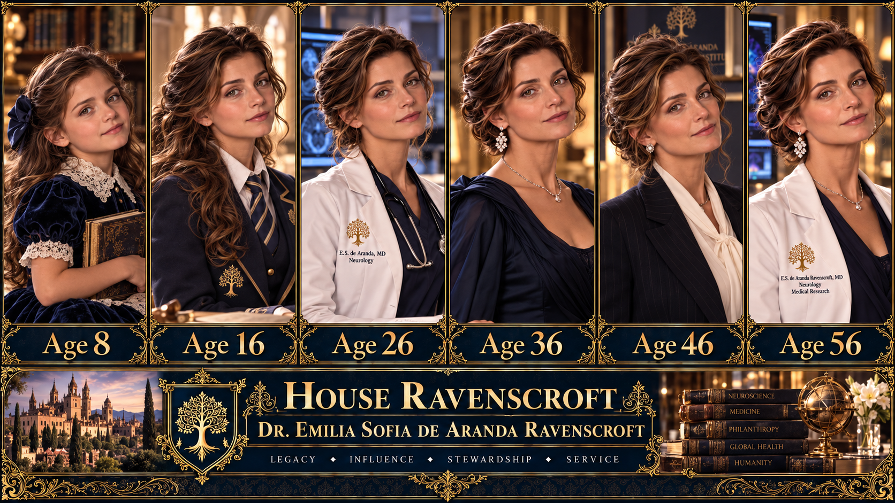
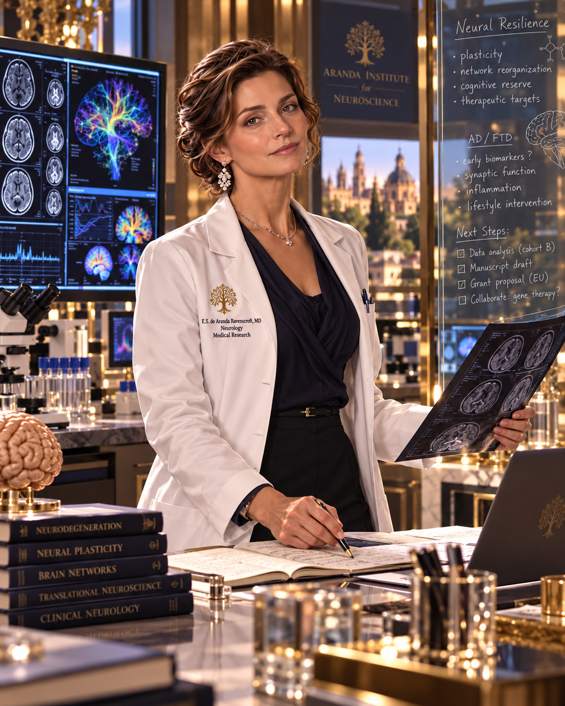
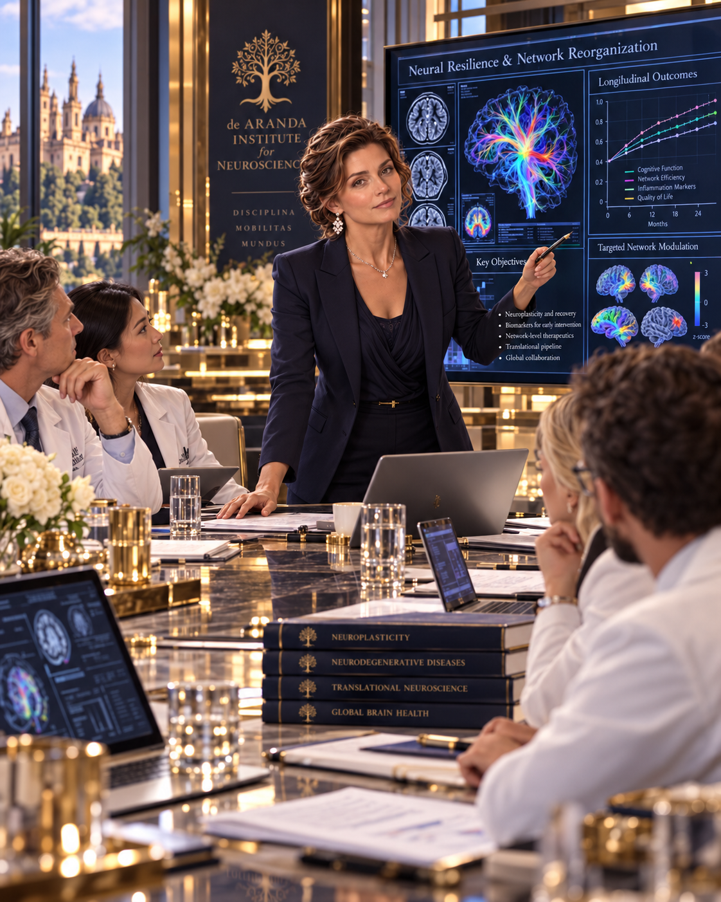
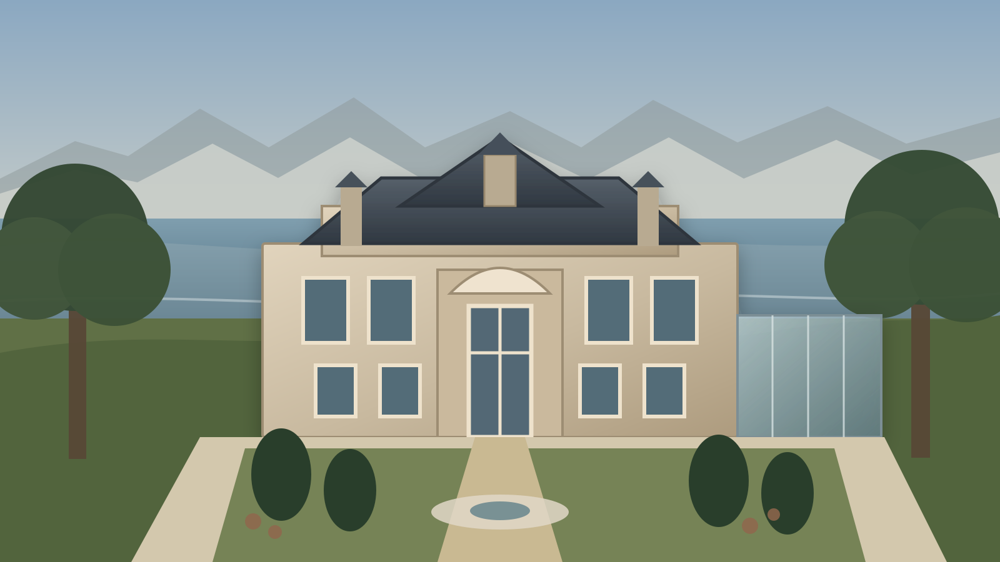
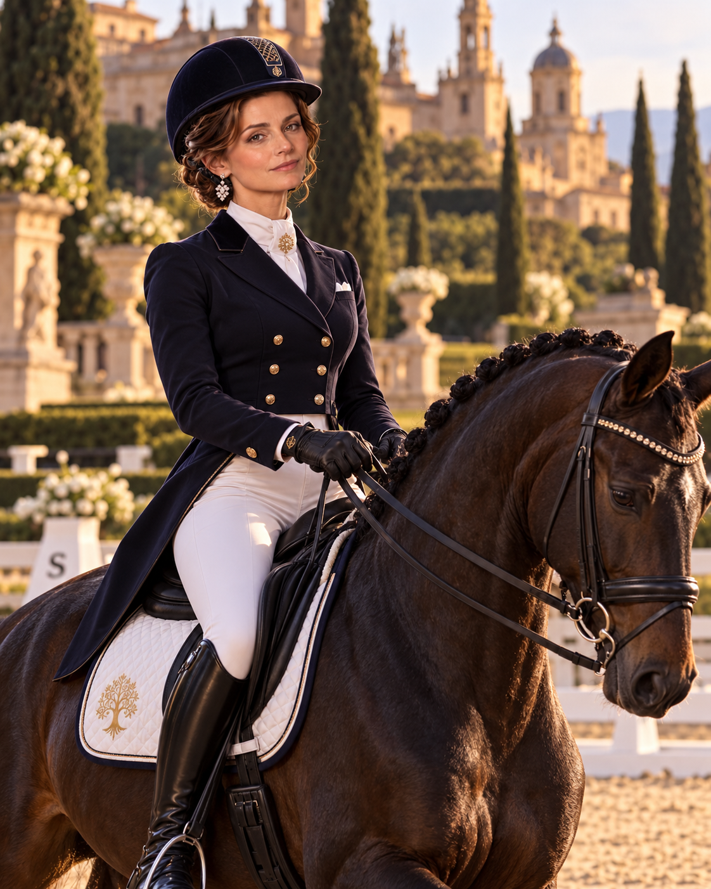
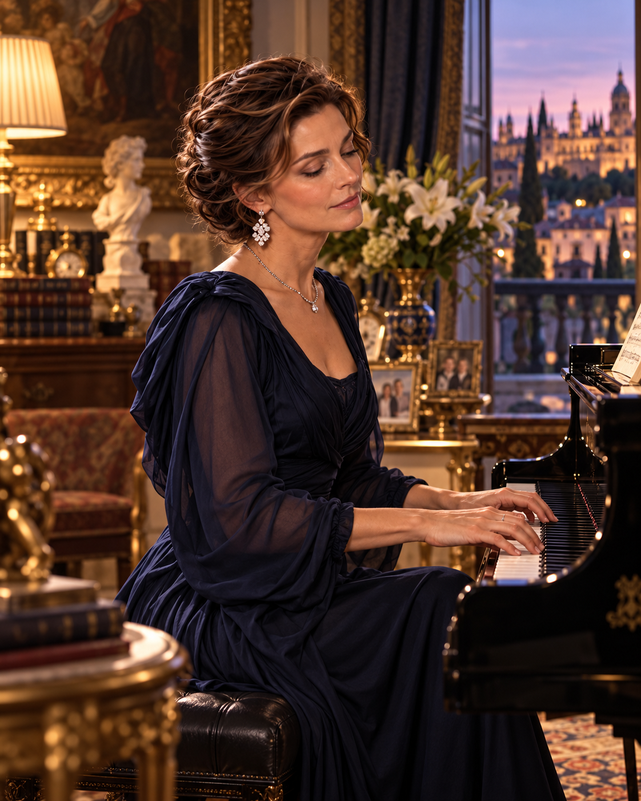
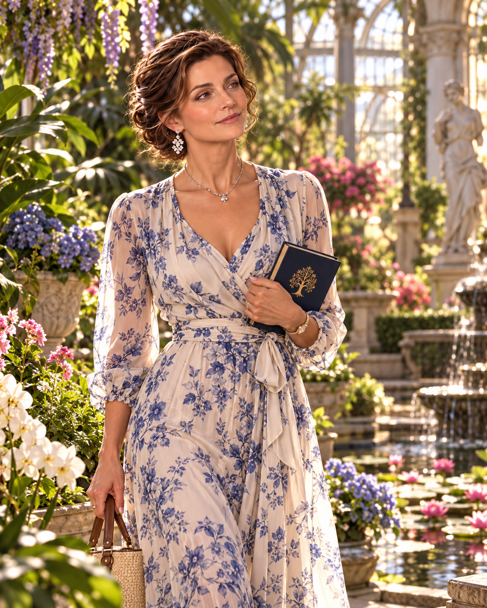
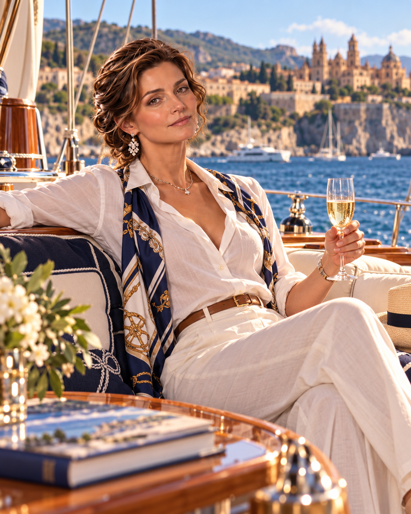

Parents
Father: Alejandro Javier de Aranda
Mother: Sofia Isabel Valcárcel de Aranda
Born into a major Spanish industrial dynasty; de Aranda is independently wealthy and internationally connected but is not a Great House.

House Ravenscroft • Family Intelligence Archive • Master B
Locked Canon • Married-In / Patroned • Age 56 • 2026

Neurologist, physician-scientist, medical researcher, philanthropist, and fully inducted married-in Ravenscroft whose independent de Aranda wealth and international scientific standing make her a major medical and institutional figure in her own right.

Father: Alejandro Javier de Aranda
Mother: Sofia Isabel Valcárcel de Aranda
Born into a major Spanish industrial dynasty; de Aranda is independently wealthy and internationally connected but is not a Great House.
Thomas Julian Ravenscroft
Born: February 6, 1968 • Age: 58
Executive Chairman — Meridian Aeronautics & Infrastructure Group.
Married: August 20, 1994.

Isabella Genevieve Ravenscroft
Born: September 14, 1996 • Age: 30
Alexandra Emilia Ravenscroft
Born: March 3, 1999 • Age: 27
Julian Thomas Ravenscroft II
Born: June 17, 2003 • Age: 23
Cecilia Rose Ravenscroft
Born: November 2, 2008 • Age: 17

None.
Emilia was not discovered, raised, or advanced through Ravenscroft patronage. She entered the Ravenscroft sphere as an independently elite physician from the de Aranda industrial dynasty. Her marriage to Thomas Julian Ravenscroft is therefore not an original-patron relationship.
By 2026 Emilia maintains approximately 10–15 active protégés, primarily physicians, physician-scientists, neuroscience researchers, biomedical engineers, and exceptional medical students.
She is especially supportive of women advancing in elite medicine and science while occasionally sponsoring exceptional talent outside medicine.
Colegio Monteluz, Madrid — private bilingual preparatory education, 1976–1988; advanced science track through Bachillerato/COU with particular strength in biology, chemistry, mathematics, English, and French.
Complutense University of Madrid — M.D., Medicine, 1988–1994.
Hospital Universitario La Paz, Madrid — Neurology residency, 1994–1998.
United Kingdom & Switzerland — advanced neuroscience research and fellowship training, 1998–2002.
Advanced specialization in neurodegenerative disease, cognitive decline, neural repair, traumatic neurological injury, translational neuroscience, and the institutional translation of research into clinical programs.
Neurological diagnosis, clinical research leadership, translational neuroscience, neurodegenerative disease, cognitive preservation, neural-repair research, traumatic neurological injury, clinical-program development, and scientific philanthropy.
Psychological assessment and reading; institutional navigation; negotiation; strategic communication; information security; compartmentalization; patronage systems; elite-network management; and discretion in sensitive medical, family, and Order matters.
Born into the de Aranda family, a major Spanish industrial dynasty.
Educated at Colegio Monteluz, Madrid, completing a bilingual preparatory curriculum and advanced science-focused Bachillerato/COU.
Studies medicine at Complutense University of Madrid, earning the M.D.
Completes neurology residency at Hospital Universitario La Paz, Madrid.
Completes advanced neuroscience research and fellowship formation in the United Kingdom and Switzerland, focusing on neurodegeneration, cognitive decline, neural repair, and traumatic neurological injury.
Initial awareness of House Ravenscroft's deeper structures and the Order.
Marries Thomas Julian Ravenscroft, joining the de Aranda family to the senior Ravenscroft line while preserving her own professional identity, inherited resources, and family connections.
Formally inducted into the Order.
Chair of the de Aranda Institute for Neuroscience; internationally active neurologist, physician-scientist, philanthropist, and fully inducted Tier II specialist member.
Emilia is a neurologist and physician-scientist specializing in neurodegenerative disease, cognitive decline, neural repair, and traumatic neurological injury. She leads international research initiatives and clinical programs while directing major medical philanthropy and global neuroscience collaboration.
She builds partnerships across academic, clinical, biomedical, philanthropic, and research institutions; advises on medical strategy, research partnerships, and institutional development; and mentors exceptional physician-scientists and emerging medical talent.
Within House Ravenscroft she contributes specialist expertise to work involving longevity, cognitive preservation, trauma recovery, and related medical research. Her professional authority is genuine and independently established rather than decorative dynastic placement.


Major research and clinical-program leadership focused on preserving cognition, understanding degenerative processes, and translating laboratory findings into patient-centered strategies.
Research and institutional collaboration addressing neural repair, traumatic neurological injury, recovery, and long-term functional preservation.
Builds and funds cross-institutional partnerships linking clinicians, researchers, biomedical engineers, universities, foundations, and major research centers.
Provides neurological and medical expertise to House Ravenscroft initiatives involving longevity, cognitive preservation, trauma recovery, and related advanced research.
Specific named flagship studies or programs have not yet been separately locked in canon.
A fuller dedicated behavioral-assessment profile has not yet been separately developed and locked.
Initial awareness of House Ravenscroft's deeper structures and the Order during the pre-marriage period.
Marries Thomas Julian Ravenscroft.
Four children born into the senior Ravenscroft line: Isabella, Alexandra, Julian II, and Cecilia.
Marriage remains a genuine dynastic and personal alliance while Emilia retains her own profession, family capital, institutional network, and patronage standing.
First meeting, engagement date, and detailed courtship chronology have not yet been established.
Dossier distinction: marriage, Order membership, security clearance, specialist access, wealth, patronage, and command authority remain separate categories.
Approximately 10–15 active protégés.
Primary sectors: physicians, physician-scientists, neuroscience researchers, biomedical engineers, and exceptional medical students.
Selective, demanding, and strongly achievement-oriented. Particularly supportive of women advancing in elite medicine and science while retaining the flexibility to sponsor exceptional talent outside medicine.
Legacy cohort: not separately quantified.
Resources include industrial holdings, infrastructure, real estate, family trusts, research foundations, medical philanthropy, and other de Aranda assets.
Household wealth is distinct from Emilia's personal wealth and from the wider assets of either family.
Primary 2026 residence and principal international base: a discreet lake-view villa in Cologny combining an older European residential core with restrained modern interiors, research-grade communications, privacy, and House security systems.

de Aranda family estate and major family base.
Secondary residence supporting professional and institutional work.
Seasonal residence supporting family and Mediterranean leisure.




Personal Philosophy
“The measure of progress is not how long we live, but how clearly we remain ourselves.”